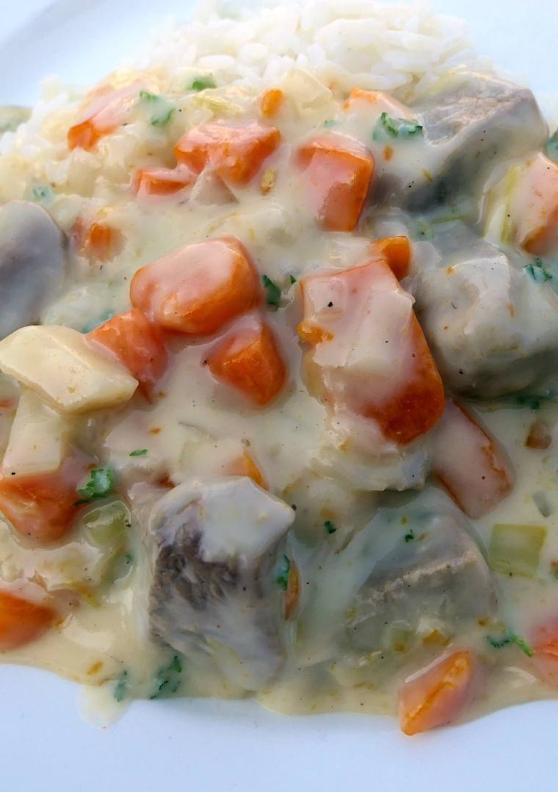

Cuisine française

Cuisine française
Blanquette de veau
Préparation : 30 min
Cuisson : 1 h 30
Ingrédients (pour 6 personnes)
- 1,2 kg de veau (épaule, tendron, collier)
- 2 carottes
- 1 oignon
- 2 clous de girofle
- 1 poireau
- 2 branches de céleri
- 250 g de champignons de Paris
- 1 bouquet garni (thym, laurier, persil)
- 40 g de beurre
- 40 g de farine
- 20 cl de crème fraîche épaisse
- 1 jaune d’œuf
- 1 citron
- 12 g de sel
- 2 g de poivre
Quantités adaptées. Les temps de cuisson ne sont pas recalculés.
- Couper la viande en morceaux. Les déposer dans une grande casserole, couvrir d’eau froide, porter à ébullition et écumer.
- Ajouter les carottes en rondelles, l’oignon piqué de clous de girofle, le poireau et le céleri en tronçons, le bouquet garni, saler et poivrer. Laisser mijoter à feu doux pendant 1 h 15.
- Pendant ce temps, nettoyer et émincer les champignons, les faire revenir dans 20 g de beurre.
- Préparer un roux blanc : faire fondre 20 g de beurre, ajouter la farine, mélanger puis verser 50 cl du bouillon de cuisson filtré. Fouetter jusqu’à épaississement.
- Remettre la viande et les légumes dans la sauce, ajouter les champignons.
- Mélanger la crème, le jaune d’œuf et le jus de citron. Incorporer hors du feu à la sauce.
- Servir bien chaud avec du riz.
AstuceNe pas faire bouillir la sauce après avoir ajouté le jaune d’œuf et la crème, pour éviter qu’elle ne tranche.